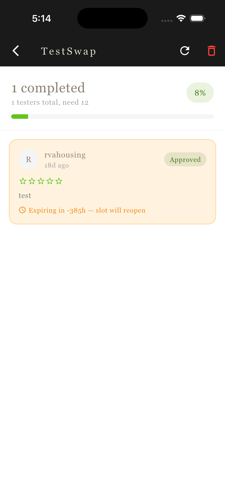
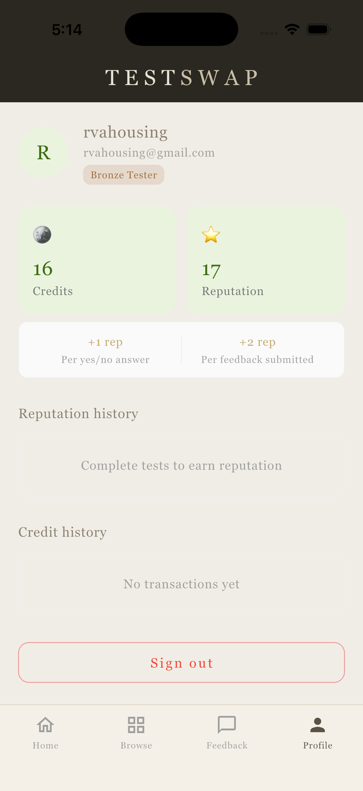
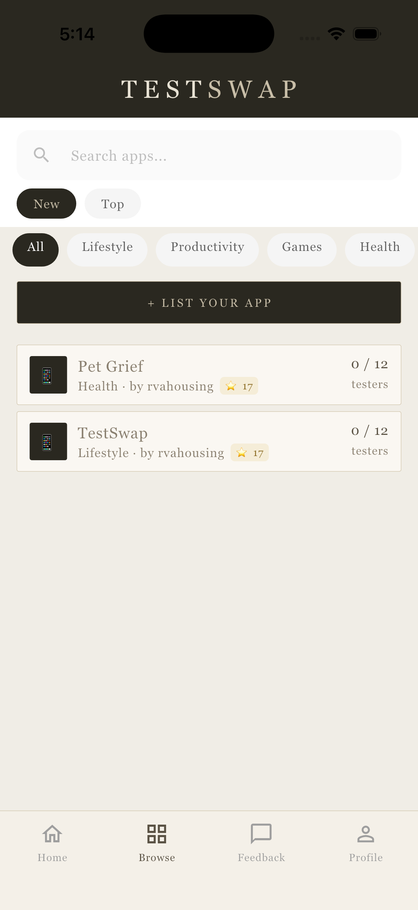
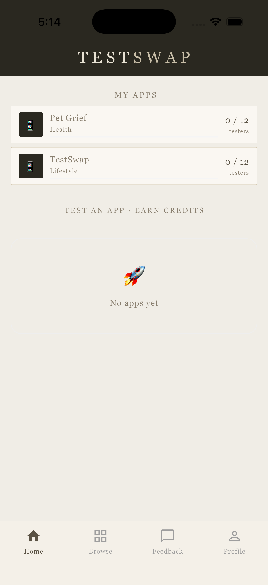
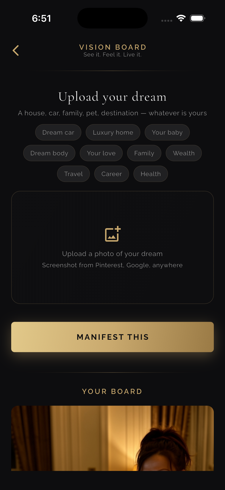
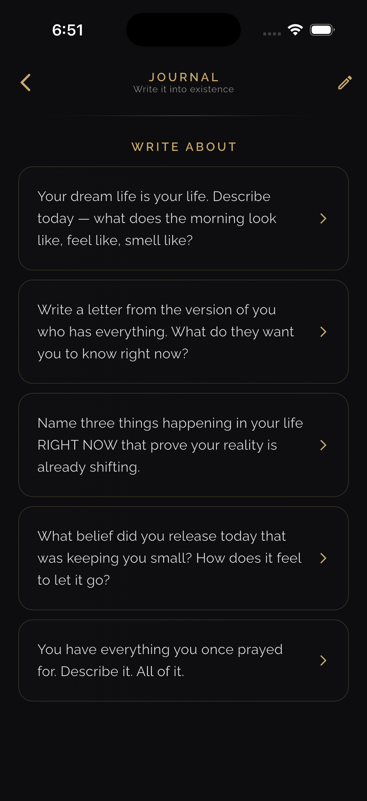
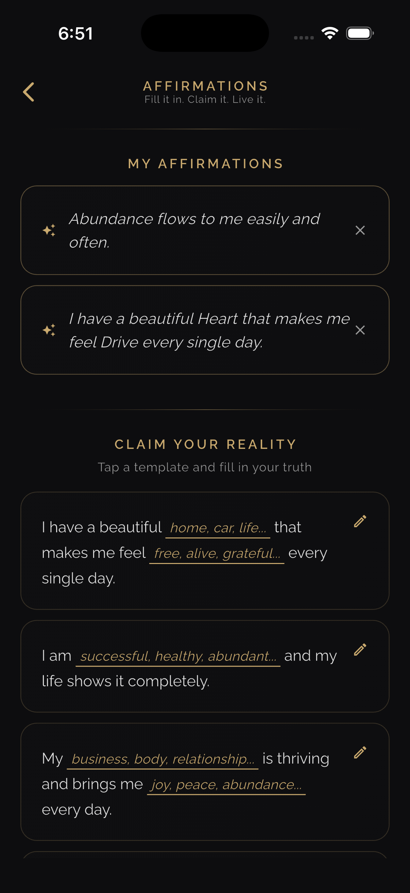
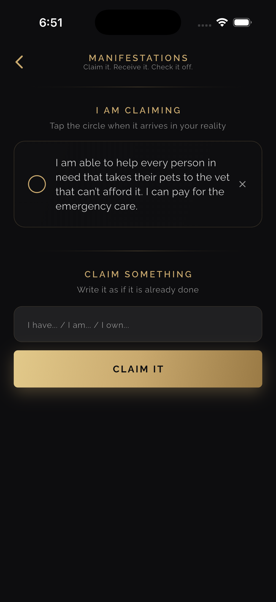
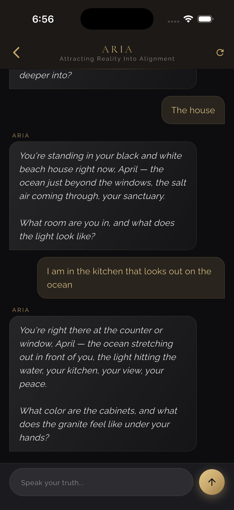
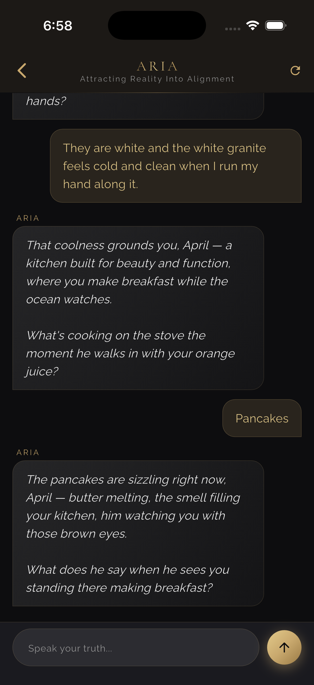

April Weber
Mobile App Developer | Flutter | Supabase | AI Integrations
I build mobile apps, AI/chat apps, and MVPs using Flutter, Supabase, and AI integrations.
I enjoy taking ideas from concept to working product, including user flows, app features,
testing, and launch preparation.
Projects
Pet Grief
```
What it is
Pet Grief is an app you built to support people grieving the loss of a pet, inspired by your own experience losing your dog Louie. It grew out of the children's book you wrote, "I'll Always Be Your Buddy," and centers on an AI companion (Louie) that users can chat with for comfort and connection.
Core features
AI chat with Louie: Users can talk to an AI version of a dog companion. The persona was carefully tuned so Louie feels like a real dog casually texting, short responses, no invented memories about the user's specific pet, no overly therapeutic or clinical language.
Per pet chat histories: Each pet a user adds gets its own separate chat thread.
Journal entries: Users can write journal entries about their pet, which feed into Louie's system prompt so the AI has real context to draw from rather than making things up.
Rainbow Bridge Wall: A Supabase backed community memorial wall where users can post tributes, tied to device ID ownership (no account required).
Rainbow Bridge fog device: When details about a lost pet are genuinely unclear or unknown, Louie has a built in way to acknowledge that gracefully instead of fabricating memories.
Reunion photo generator: Uses fal.ai (flux 2 flex/edit) through a Supabase Edge Function to generate an image imagining a reunion with the pet.
Push notifications and onboarding quiz: Helps personalize the experience from the start.
Multi pet awareness: The AI is aware of all pets in a household, so it doesn't refer to others by the wrong context.
Platforms and pricing
Built in Swift/SwiftUI with a Supabase backend (project ref mohlrksqnyshahragebr) for chat history, journal entries, and the Rainbow Bridge Wall, plus fal.ai for image generation.
Built with: Flutter, Supabase, and AI integration.
```
SMART Flagler Foundation
```
SMART Flagler Foundation is a community app for lost pets, found pets, donations,
volunteers, and local alerts. The app was designed to help organize community support
and make important pet-related information easier to access.
Built with: Flutter and Supabase.
```
InterQ
```
Self-Awareness & Personality Quiz App
InterQ (published on the App Store as "InterQ Quizzes and Advice") is a self-awareness and personality quiz app built around an AI companion named Charlie. Rather than matching users with strangers, the app is designed to help people understand themselves better through guided self-reflection, quizzes, and honest conversation.
Core features
Chat with Charlie: A warm, honest AI companion that gives personalized insight based on the user's quiz results, built using a live Anthropic API integration.
Personality assessments: Quizzes covering attachment style, communication persona, love language, emotional availability, and self-awareness level.
Fun magazine style quizzes: Lighter, shareable quizzes that complement the deeper assessments.
Photo feedback: Users can upload a photo and get Charlie's honest take, covering things like outfit, vibe, or overall presentation.
Bio writer: Charlie can critique an existing personal bio or help write one from scratch, informed by the user's quiz results so it reflects their actual personality.
Weekly quiz notifications: Push notification system to bring users back for new quizzes.
Personalized memory: A user profile model stores assessment and quiz results so Charlie's responses stay consistent and tailored over time.
Platforms
Published on the App Store, built in Swift/SwiftUI with SwiftData.
Tech stack
Swift/SwiftUI, SwiftData, Anthropic API (Claude) for Charlie's conversational responses.
Status
Live on the App Store and Google Play.
Built with: Flutter, SwiftUI, Groq, and Anthropic.
```
Test Swap
```
Test Swap is a mobile app where users can list their apps, test other apps, earn credits,
and give feedback. It was created to help app developers get more testers and improve
their apps before launch.
Built with: Flutter and Supabase.




```
ARIA
```
ARIA is an AI-powered manifestation companion app that helps users set intentions,
track personal growth, and visualize their goals. I integrated Claude AI through
Supabase Edge Functions to provide personalized conversational guidance, and added
an AI-generated vision board feature using fal.ai to turn user goals into visual imagery.
Built with: Flutter, Supabase, Claude AI, Supabase Edge Functions, and fal.ai.






```
BikeWeek2026
```
DaytonabikeWeek2026 is a Daytona Bike Week 2026 website/app project for sharing event information,
schedules, contests, and updates for visitors attending Bike Week.
Built with: Website/app planning, event content, user flows, and launch preparation.
```
What I can help with
App ideas, MVPs, AI chatbot apps, mobile app testing, user flows, app improvements,
Supabase setup, AI integrations, and getting apps closer to launch.

.webp)
.webp)
.webp)
.webp)
.webp)
.webp)
.webp)
.webp)
.webp)
.webp)


.png)
.png)
.png)